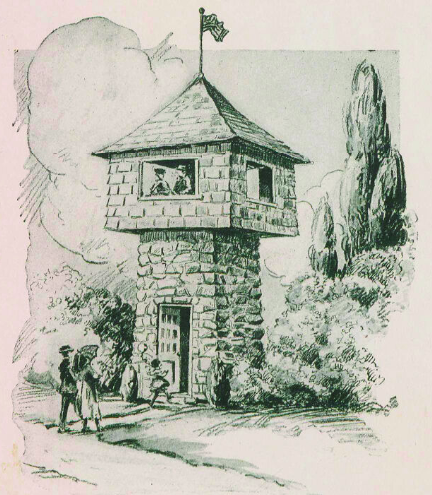

Look Out Tower

Figure 3. "Look Out Tower", from "Indian Village Country Club: Homes, Not Houses" (p. 18) by Emory J. Sweeney, 1923, "Missouri Valley Special Collections, Kansas City Public Library, Kansas City, Missouri."
Credits
- Sweeney, Emory J. 1923, "Old Dutch Mill". "Indian Village Country Club: Homes, Not Houses", p. 10. "Missouri Valley Special Collections, Kansas City Public Library, Kansas City, Missouri." Indian Village
- Sweeney, Emory J. 1923. "Chime Tower". "Indian Village Country Club: Homes, Not Houses", p. 24. "Missouri Valley Special Collections, Kansas City Public Library, Kansas City, Missouri." Indian Village
- Sweeney, Emory J. 1923. "Look Out Tower". "Indian Village Country Club: Homes, Not Houses", p. 18. "Missouri Valley Special Collections, Kansas City Public Library, Kansas City, Missouri." Indian Village
- Louis Houck. 1908. "Nathan Boone Portrait". Retrieved April 21, 2026 from Wikimedia Image
- Unknown. 1921. "Portrait of Emory J. Sweeney". Retrieved April 21, 2026 from Wikimedia Image
- Unkown. 1915. "Portrait of William Rockhill Nelson". Retrieved April 21, 2016 from Wikimedia Image
- Euston, Diane. "Waldo's Santa Fe Hills: An Exclusive Indian Village with Layers of History." 26 Aug. 2020, Santa Fe Hills
- Missouri Valley Special Collections, Kansas City Public Library. "Kansas City 1940 Tax Assessment Photographs". 2024, Jackson County Missouri
- Background photo Aerial View of Houses in a Residential Area by Pavel Danilyuk on Pexels